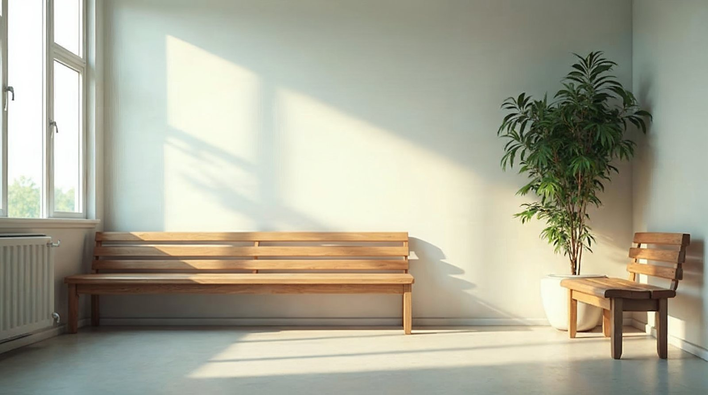
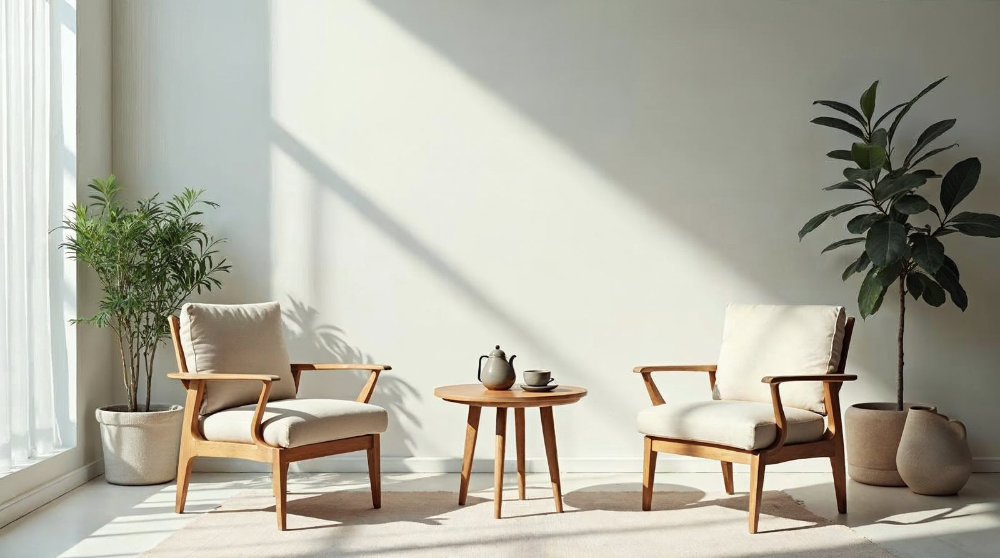
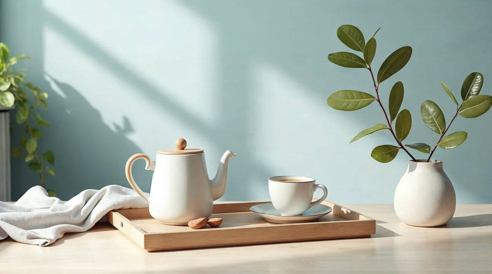
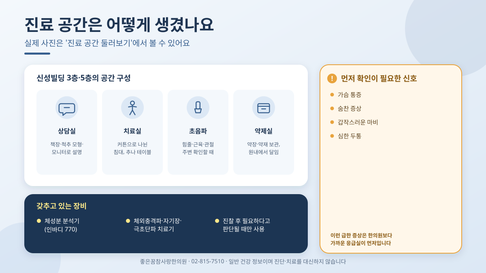

이종호 한의사 감수좋은꿈참사랑한의원 대표원장 (한의사 면허번호 19769)발행 2026-11-23 · 수정 2026-11-26
이 글의 차례
- 상담실과 진료실
- 치료실
- 치료실에서는 어떻게 진행되나요?
- 갖추고 있는 장비
- 추나 테이블에서는 무엇을 하나요?
- 물리치료와 체외충격파 전에는 무엇을 알려 주면 될까요?
- 왜 장비를 모든 분께 쓰지 않을까요
- 약제실
- 3층과 5층, 이동이 걱정된다면요?
- 오시는 길
- 왜 화면과 모형을 보며 설명할까요
- 처음 오신 날은 어떤 순서로 움직이나요?
- 진료 중 궁금한 것은 어떻게 물어보면 좋을까요?
- 먼저 이렇게 여쭙니다
- 방문 전에 이렇게 준비하면 편합니다
- 커튼으로 나뉜 공간이 신경 쓰이신다면요?
- 다시 오실 때는 무엇을 이어서 보나요?
- 이렇게 기록해 오시면 상담이 쉬워집니다
- 예를 들면 이런 경우입니다
- 스스로 점검해 보세요
- 사진으로 미리 보면 어떤 점이 좋을까요?
- 아이와 함께 오신다면요?
- 이런 증상은 먼저 확인이 필요합니다
좋은꿈참사랑한의원은 서울 동작구 만양로2길 2 신성빌딩 3층·5층에 있으며, 상담실과 커튼으로 나뉜 치료 공간, 추나 테이블, 초음파와 치료 장비, 약제실로 이루어져 있습니다. 처음 오시는 분이 미리 둘러볼 수 있도록 실제 사진은 진료 공간 둘러보기에 모아 두었습니다.
상담실과 진료실
- 책장과 척추 모형, 모니터가 있어 영상이나 모형을 보며 설명할 때 씁니다.
- 처음 오시면 이곳에서 불편한 점과 생활을 충분히 이야기합니다.
치료실
- 커튼으로 나뉜 치료 침대에서 침 치료를 받습니다.
- 추나 치료를 위한 전용 테이블이 있습니다. (교정추나 안내)
- 초음파 장비로 통증 부위의 힘줄, 근육, 관절 주변을 확인해야 할 때 살핍니다. (초음파 진단 안내)
치료실에서는 어떻게 진행되나요?
치료실에서는 커튼으로 나뉜 침대에 편하게 누워 치료를 받습니다. 침은 일회용 멸균 침을 쓰며, 아픈 자리에 직접 놓기도 하고 손발처럼 떨어진 자리에 놓기도 합니다. 침이 무서우시면 시작 전에 말씀해 주세요.
가장 아픈 곳은 원장이 직접 침이나 추나, 체외충격파 같은 그날 필요한 치료를 합니다. 그 밖의 불편한 곳은 직원이 자기장, 온열, 패드형 물리치료기 같은 기본 물리치료로 넓게 이어서 살핍니다.
물리치료를 받는 동안 뜨겁거나 불편하면 참지 말고 바로 말씀해 주세요. 피부 감각이 둔하거나 몸에 금속이나 심박조율기가 있다면 시작 전에 먼저 알려 주셔야 합니다.
치료가 끝나면 치료한 부위와 반응을 기록해 두고, 다음에 오셨을 때 달라진 점부터 이어서 여쭙습니다. 치료를 받으며 느낀 점이 있다면 침대에서 일어나기 전에 바로 말씀해 주셔도 좋습니다.

갖추고 있는 장비
- 체성분 분석기(인바디 770), 당화혈색소 검사기, 혈액 검사기(마인드레이·PT10)
- 체외충격파(제우스, 한일티엠), 맥스톰 자기장 치료기, IS400 극초단파 치료기
장비는 모든 분께 쓰는 것이 아니라 진찰 후 필요하다고 판단될 때만 씁니다.
장비 이름이 낯설게 느껴지셔도 괜찮습니다. 이름을 미리 아실 필요는 없고, 쓰게 될 때 무엇을 왜 하는지 그 자리에서 말씀드립니다. 처음 보는 장비라 걱정되신다면 시작하기 전에 어떤 느낌인지, 얼마나 걸리는지 먼저 물어봐 주세요.
추나 테이블에서는 무엇을 하나요?
추나는 한의사가 손으로 척추와 관절, 근육의 움직임을 살피고 조정하는 방법입니다. 목과 등, 허리, 골반이 어떻게 움직이는지 먼저 평가한 뒤 교정추나부터 비교적 부드러운 손길의 두개천골추나까지 몸에 맞는 기법과 세기를 고릅니다.
추나는 소리를 내는 것이 목표가 아닙니다. 받는 중에 불편하면 바로 말씀해 주시면 세기를 줄입니다. 골다공증이 있거나 최근 수술이나 골절이 있었다면, 또 임신 가능성이 있다면 시작 전에 먼저 알려 주세요. 건강보험(또는 자동차보험) 적용 여부는 방문 전 전화로 확인해 주세요.
물리치료와 체외충격파 전에는 무엇을 알려 주면 될까요?
물리치료 장비로는 맥스톰 자기장 치료기와 온열치료, 패드형 물리치료기, IS400 극초단파 치료기 등을 상태에 맞춰 씁니다. 몸에 금속이나 심박조율기가 있다면 먼저 알려 주세요(맥스톰 자기장 치료기를 쓰기 전에 무엇을 알려 주면 좋을까요?).
체외충격파는 몸 밖에서 힘줄이나 근막 쪽에 충격파 에너지를 전달하는 방법으로, 통증 위치와 아픈 지점을 확인하고 반응을 보며 강도를 조절합니다. 혈액을 묽게 하는 약을 드시거나, 임신 가능성이 있거나, 치료 부위에 금속 삽입물이나 피부 상처가 있으면 미리 말씀해 주세요.
왜 장비를 모든 분께 쓰지 않을까요
장비마다 살피는 대상과 쓰임이 다르기 때문입니다. 예를 들어 초음파는 손으로 살핀 소견에 영상을 더해 힘줄이나 근육을 확인해야 할 때 쓰고, 체외충격파는 힘줄이나 근막처럼 잘 회복되지 않는 조직의 통증이 몇 주에서 몇 달째 이어질 때 고려합니다.
같은 어깨 통증이라도 어떤 분은 침만으로 진료를 이어 가고, 어떤 분은 초음파로 먼저 확인한 뒤 방법을 정합니다. 장비가 많다고 해서 모두 쓰는 것이 아니라, 진찰에서 본 것에 맞는 것만 고르는 것이 원칙입니다.
장비를 쓰기 전에는 무엇을, 왜 하는지 먼저 말씀드립니다. 궁금한 장비가 있으면 그 자리에서 편하게 물어봐 주세요.
약제실
- 약장과 약재를 보관하는 공간이 있고, 대표원장이 약재를 검수한 뒤 한약을 원내에서 달여 드립니다. (원내 탕전 안내)
- 약재를 쟁반에 펼쳐 확인하고 저울로 다는 실제 모습은 원내 탕전 기록에서 볼 수 있습니다.
한약은 진단과 상담을 거친 뒤 처방합니다. 주된 고민과 함께 소화와 잠, 몸의 온기, 대소변, 복용 중인 약과 간·신장 상태를 확인한 뒤 처방하고, 드시는 동안의 변화도 이어서 봅니다.
복용 중인 양약은 임의로 끊지 마시고 상담 때 알려 주세요. 한약을 드시다가 불편한 반응이 있으면 복용을 멈추고 연락해 주시면 됩니다.
3층과 5층, 이동이 걱정된다면요?
한의원은 신성빌딩 3층과 5층에 있습니다. 무릎이나 허리가 불편해 계단이 부담되시거나 휠체어, 지팡이를 쓰신다면 방문 전에 전화로 이동 방법을 먼저 확인해 주세요. 보호자와 함께 오시는 경우에도 미리 알려 주시면 당일이 한결 편합니다.
거동이 불편한 부모님을 모시고 오신다면 거동이 불편한 부모님을 모시고 올 때는 무엇을 미리 확인하면 되나요?도 함께 읽어 보세요.
오시는 길
7호선 상도역 3번 출구에서 약 200m 직진한 뒤 오거리에서 우회전해 약 200m 올라오시면 됩니다. 노량진역(1·9호선)에서는 3번 출구 근처 정류장에서 마을버스 동작01을 타고 신동아리버파크 정류장에서 내리면 건너편 3층입니다.
자세한 길은 걷는 길과 노량진역에서 오는 법을 보세요.
왜 화면과 모형을 보며 설명할까요
말로만 들을 때보다 초음파 화면이나 척추 모형을 함께 보면 지금 어디가 어떤지 이해하기가 한결 쉽습니다. 그래서 상담실과 치료실에서 화면을 같이 보며 설명드립니다.
예를 들어 허리가 아픈 분께는 척추 모형으로 뼈와 디스크의 위치를 짚어 보며 어떤 자세에서 부담이 커지는지 설명드리고, 어깨가 아픈 분께는 초음파 화면에서 힘줄이 지나는 자리를 함께 봅니다. 눈으로 보고 나면 집에서 조심할 동작도 훨씬 쉽게 기억하실 수 있습니다.
처음 오신 날은 어떤 순서로 움직이나요?
처음 오시면 접수를 마친 뒤 상담실에서 불편한 점과 생활 이야기를 나누며 맥을 짚습니다. 주된 증상과 함께 잠, 소화, 몸의 온기, 대소변을 여쭙고, 필요하다고 판단되면 혀와 배를 살피거나 서고 걷고 앉는 동작을 확인합니다.
통증이 있다면 아픈 곳을 눌러 보고 움직여 본 뒤, 필요할 때는 초음파로 힘줄과 근육을 함께 봅니다. 그다음 치료실로 옮겨 그날 정한 치료를 받고, 귀가 전에는 집에서 지켜볼 점과 다음에 확인할 일을 안내드립니다.
급하게 뛰어오셨다면 잠시 앉아 숨을 고른 뒤에 맥을 짚습니다. 처음 방문은 이야기를 충분히 나누는 만큼 시간이 걸릴 수 있어, 진료 뒤 일정에 여유를 두고 오시면 좋습니다.
진료 중 궁금한 것은 어떻게 물어보면 좋을까요?
처음 오신 공간에서는 궁금한 것이 있어도 물어보기가 망설여지기 쉽습니다. 지금 받는 치료가 무엇인지, 왜 이 부위에 하는지, 집에 가서 무엇을 조심하면 되는지 같은 질문은 언제든 편하게 해 주세요.
설명을 한 번 듣고 잘 이해되지 않으셨다면 다시 여쭤 보셔도 괜찮습니다. 궁금한 것을 미리 메모해 오시면 잊지 않고 물어보실 수 있습니다. 화면이나 모형을 다시 보며 설명드리면 훨씬 이해하기 쉬운 경우가 많습니다.

먼저 이렇게 여쭙니다
처음 오시면 접수 뒤 맥을 짚으면서 이런 것들을 여쭙습니다.
- 어디가 언제부터, 어떤 때 불편한지
- 복용 중인 약과 영양제
- 잠·소화 같은 생활의 리듬
- 혈액을 묽게 하는 약, 임신 가능성, 몸속 금속처럼 먼저 알아야 할 점
- 다른 병원에서 받은 검사나 진료
그다음 필요한 치료와 귀가 전 안내로 이어집니다. 준비물과 진료 흐름은 처음 오시는 분 안내에서 확인할 수 있습니다.
방문 전에 이렇게 준비하면 편합니다
- 팔과 다리를 걷기 쉬운 편한 옷 입고 오기(침 치료를 받는 날은 어떤 옷차림이 편할까요?)
- 치료 부위에 닿는 시계나 팔찌, 목걸이는 미리 풀기 쉽게 하고 오기
- 진료 1시간 전쯤부터 커피나 사탕처럼 혀 색을 바꾸는 음식은 피하기
- 차를 가져오신다면 주차 방법을 미리 확인하기(한의원에 차를 가져가면 어디에 주차하나요?)
- 다른 병원 검사 결과나 복용 약 목록이 있다면 챙겨 오기
- 예약 시간보다 조금 일찍 도착해 숨을 고를 여유 두기
혈액을 묽게 하는 약을 드시거나 임신 가능성이 있다면 치료 전에 먼저 말씀해 주세요. 침이나 체외충격파, 추나를 정할 때 함께 살펴야 하는 내용입니다.
커튼으로 나뉜 공간이 신경 쓰이신다면요?
치료 침대는 커튼으로 나뉘어 있어, 다른 분의 이야기 소리가 들릴까 걱정하시는 분도 있습니다. 다른 사람이 듣기 불편한 이야기는 상담실에서 나누실 수 있으니 편하게 말씀해 주세요.
치료 부위 때문에 옷차림이 걱정되시면 미리 말씀해 주시면 어떻게 할지 함께 정합니다. 낯선 공간에서 긴장되는 것은 자연스러운 일이니, 불편한 점이 있으면 언제든 말씀해 주세요.
다시 오실 때는 무엇을 이어서 보나요?
다시 오시면 지난번 기록을 보며 맥부터 다시 짚고, 가장 불편하셨던 점이 그사이 어땠는지 이어서 여쭙습니다. 지난번 치료 뒤 하루 이틀 어떻게 지내셨는지, 집에서 해 보기로 한 것을 해 보셨는지도 함께 듣습니다.
그 이야기를 바탕으로 같은 치료를 이어 갈지, 방법이나 부위를 바꿀지 그날 다시 정합니다(재진 때 한의원에서는 지난번 이후 무엇을 확인하나요?).

이렇게 기록해 오시면 상담이 쉬워집니다
- 불편한 증상과 시작된 때, 심해지는 상황
- 복용 중인 약과 영양제 목록
- 건강검진이나 병원 검사 결과지, 영상 자료(있다면)
예를 들면 이런 경우입니다
- 예를 들어 손목이 아파 처음 오시는 직장인이라면, 상담실에서 이야기를 나누고 맥을 짚은 뒤 아픈 동작을 확인하고, 필요하면 초음파로 손목 주변을 함께 봅니다.
- 예를 들어 체중과 혈당이 걱정되어 오신 분이라면, 상담과 진맥을 마친 뒤 필요하다고 판단되면 체성분 분석을 함께 살피며 생활 이야기를 나눕니다.
- 예를 들어 교통사고 뒤 목과 허리가 뻐근해 오신 분이라면, 사고 경위와 병원 검사 결과를 먼저 듣고 맥을 짚은 뒤, 아픈 동작을 확인해 그날의 치료를 정합니다.
- 예를 들어 부모님을 모시고 처음 오시는 가족이라면, 이동 방법을 전화로 먼저 확인하시고, 상담실에서는 부모님과 보호자의 이야기를 함께 듣습니다.
스스로 점검해 보세요
- 오시는 길과 걸리는 시간을 확인했다
- 편한 옷차림과 챙길 서류를 준비했다
- 복용 중인 약과 영양제 이름을 적어 두었다
- 혈액을 묽게 하는 약, 임신 가능성, 금속 삽입물처럼 먼저 알릴 것을 떠올렸다
- 진료 뒤 일정에 여유를 두었다
- 미리 보고 싶은 공간이 있다면 사진을 둘러봤다
사진으로 미리 보면 어떤 점이 좋을까요?
처음 가는 곳은 문을 열고 들어서기 전부터 긴장되기 마련입니다. 진료 공간 둘러보기에서 상담실과 치료실, 장비 사진을 미리 보고 오시면 어디에서 무엇을 하게 될지 그려 볼 수 있어 마음이 한결 가벼워집니다.
한약이 어떻게 준비되는지 궁금하신 분은 원내 탕전 기록의 사진을 함께 보셔도 좋습니다. 사진을 보다가 궁금한 점이 생기면 메모해 두셨다가 진료 때 물어봐 주세요.
아이와 함께 오신다면요?
아이와 함께 오실 때는 평소 모습을 잘 아는 보호자가 함께해 주세요. 아이가 먹고 있는 약과 알레르기, 요즘 잠과 식사가 어떤지를 메모해 오시면 진료가 수월합니다.
낯선 공간에서 아이가 긴장하면 서두르지 않고 천천히 진행합니다. 아이가 좋아하는 작은 장난감이나 책을 챙겨 오시면 기다리는 동안 마음을 편하게 하는 데 도움이 됩니다.
이런 증상은 먼저 확인이 필요합니다
- 가슴 통증이나 숨이 차는 증상
- 갑작스러운 마비나 말 어눌함
이런 신호가 있으면 한의원보다 가까운 병원이나 응급실을 먼저 찾으세요.

여쭙는 것
- 어디가 언제부터, 어떤 때 불편한지
- 복용 중인 약과 영양제
- 잠·소화 같은 생활의 리듬
먼저 확인이 필요한 신호
- 가슴 통증이나 숨이 차는 증상
- 갑작스러운 마비나 말 어눌함
자주 묻는 질문
엘리베이터가 있나요?
한의원은 신성빌딩 3층·5층에 있습니다. 엘리베이터 이용 등 이동이 걱정되시면 방문 전 전화(02-815-7510)로 확인해 주세요. (부모님과 오는 법)
진료실은 개별 공간인가요?
치료 침대는 커튼으로 나뉘어 있으며, 공간 구성은 방문 전에 문의하시면 안내해 드립니다.
사진으로 미리 볼 수 있나요?
진료 공간 둘러보기에서 상담실, 치료실, 장비, 의료진 사진을 볼 수 있습니다.
좋은꿈참사랑한의원은 재진 때 지난번 이야기부터 이어서 여쭙니다. 진료시간과 예약은 오시는 길에서 확인하세요.
어디서 상담받을 수 있나요?
좋은꿈참사랑한의원은 서울 동작구 만양로2길 2 신성빌딩 3층·5층(서울 동작구 상도동, 7호선 상도역 3번 출구 근처)에 있습니다. 한의사 3명(이종호 대표원장, 조영기 수석진료원장, 정원영 진료원장)이 진료합니다. 진료시간은 평일 09:30~20:00(점심 13:00~14:00), 토·일·공휴일 09:30~15:00이며, 방문 전 전화로 확인을 권합니다. 예약은 네이버 예약, 카카오톡 상담, 전화 02-815-7510로 받습니다.
이 글은 일반적인 건강 정보이며 개인의 진단이나 치료를 대신하지 않습니다. 증상이 있거나 복용 중인 약이 있다면 진료를 통해 확인하세요. 치료 효과는 개인마다 다를 수 있습니다.
작성 기준: 일반적으로 알려져 있는 건강 정보를 참고해 정리했습니다(대표원장 감수). 증상 기록은 1~2주 동안 하루 1회, 비슷한 시간에 적어 오시면 지난 상태와 비교하기 쉽습니다.